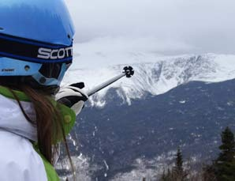
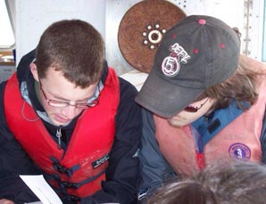
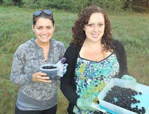
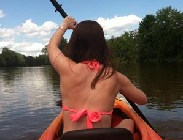
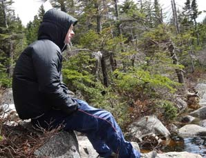
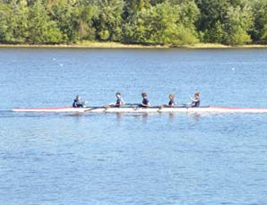
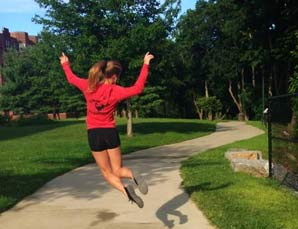
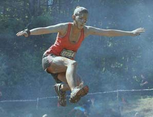
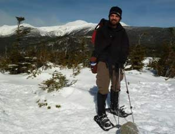
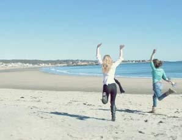

Emilia Soeltz
I enjoyed skiing at Brettons Woods with the crisp air and fresh powder.
James Gallagher
This is me looking at some catch from the st Lawrence estuary in high school trying to determine the health of the local salmon population.
Kristin Morrissey
I feel way better about my life and can focus better on school when I am physically active and outdoors.
Corinne Clifford
Kayaking down the Saco river is one of my favorite summer activities. It is so peaceful and just for a couple of hours, you forget about all your stress.
Greg Saras
This is a photo of me enjoying one of the many beautiful views from atop a mountain in NH.
Tyler Schmitt
Rowing gives me the opportunity to push my limits while enjoying the outdoors. It's my way of connecting with the water and other people.
Stephanie Cleary
Running is an easy activity you can do outside on a nice day. I love getting fresh air on a long run!
Alexandra O'Brien
This past summer I can proudly say I completed the Spartan Race. I normally enjoy running but this race was even more fun because I was able to complete all different types of obstacles. I can't wait to do it again this summer!
Zachary Porter
You can't beat a day like this for a winter hike. Me on Mt. Isolation in NH's White Mountains.
Kate Carcia
My best friend and I never spend a nice day inside. We find small parks, hidden areas in the woods, or take a drive to the beaches in Gloucester and Rockport to make the most of time we have together.